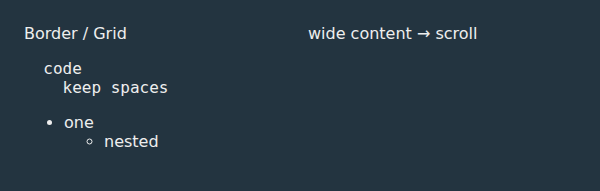
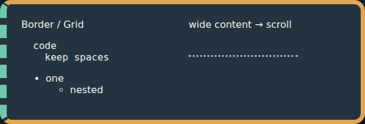
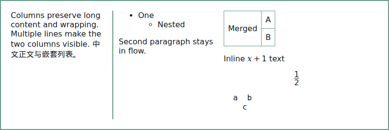
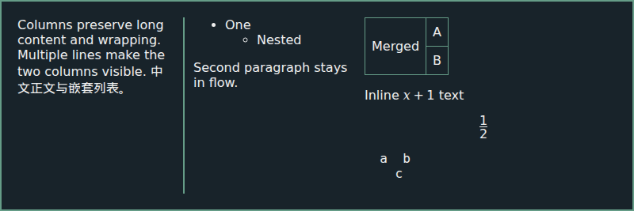
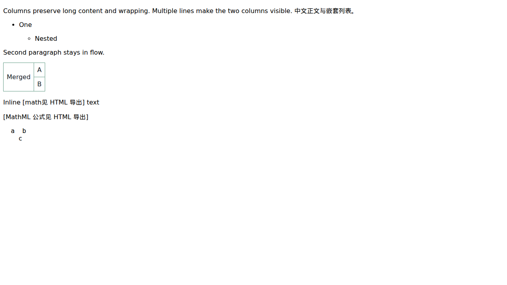
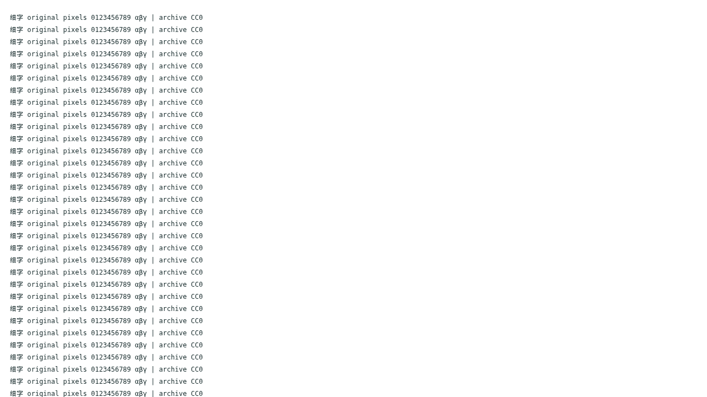

本地自编 CC0 合成内容，真实 Chromium MV3 导入/下载/离线查看；没有真实用户 ChatGPT 内容。来源与修复后图片逐 RGBA 对比；不是设计示意图。
旧导出 top/left 为0px；修复后7px实线、11px虚线，600×205、492000通道与来源完全一致。


两主题来源/导出像素完全一致，均800×267。字形是否足够仍依赖本机字体，不把本机渲染当字体覆盖认证。




marked在断网Chromium中渲染导出的原始Markdown；不是Obsidian GUI。


完整安装验证、全部产物及日志在CI工件和测试报告中。Windows/Obsidian GUI仍未验证；任意第三方业务逻辑与公式推断不受支持。